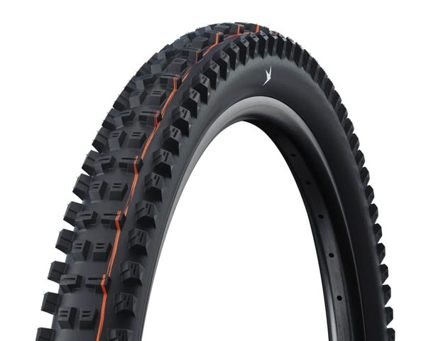
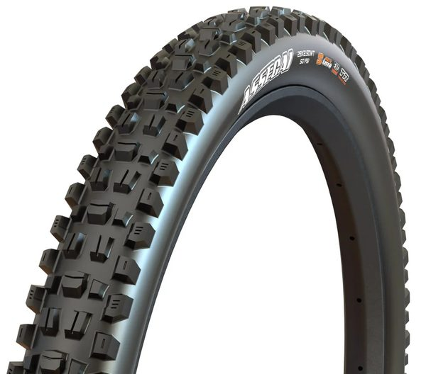
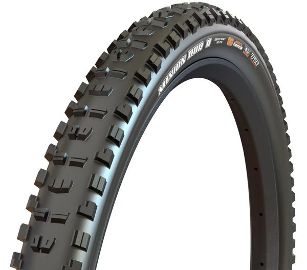
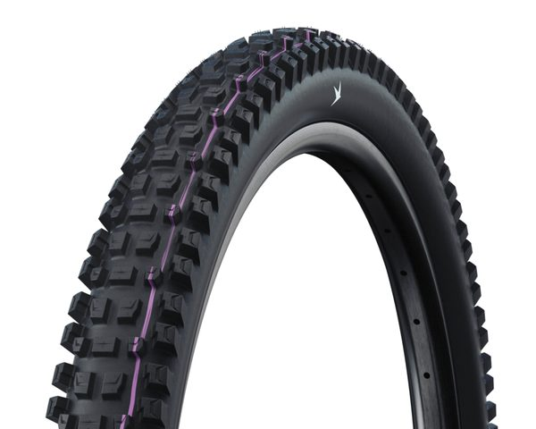
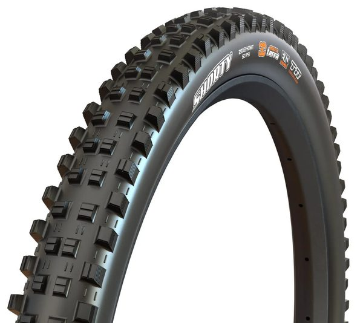
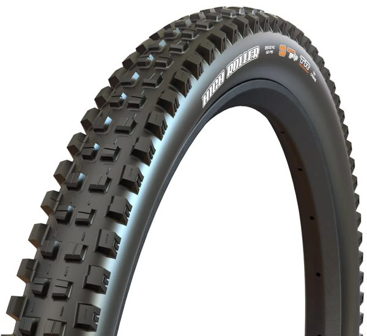
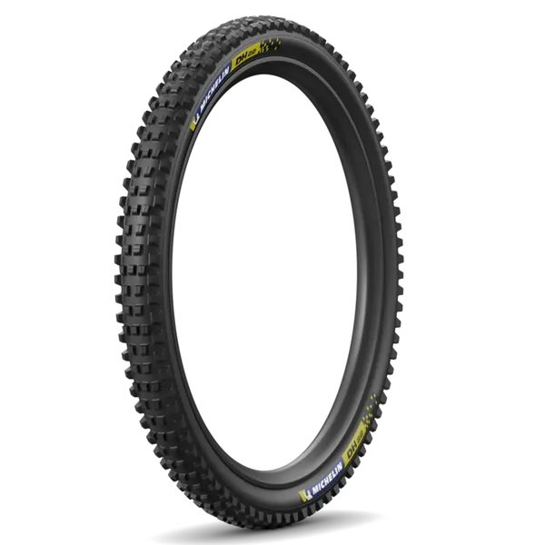
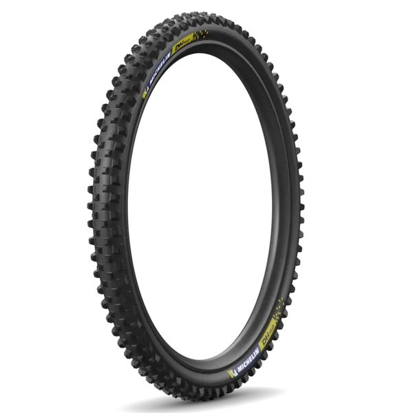
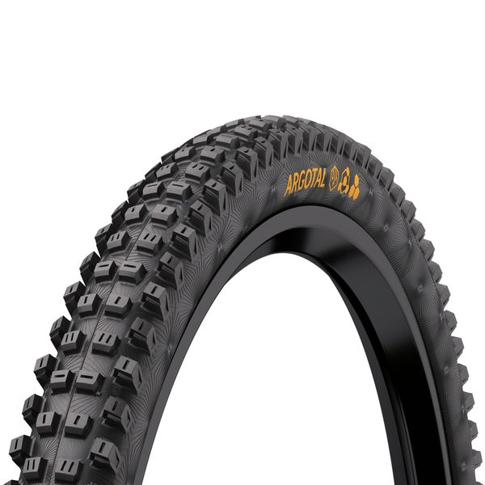

Tires
Schwalbe Magic Mary (F) + Tacky Chan (R)
2219 pts · 7 tracked riders
Compare 23 tires used by 41 tracked professional downhill riders. See rider count, competition points and associated profiles. The current points leader in this category is Schwalbe Magic Mary (F) + Tacky Chan (R).

2219 pts · 7 tracked riders


1794 pts · 7 tracked riders

1410 pts · 4 tracked riders

861 pts · 2 tracked riders






295 pts · 1 tracked rider



Tires are a direct contact point with the course, and teams may change casing, compound or tread as conditions evolve. This ranking records the named product family. It should not be read as a fixed choice for every round or weather condition.
The current RidersFanatics dataset connects 23 products from 5 brands to 41 rider profiles. Schwalbe Magic Mary (F) + Tacky Chan (R) leads by combined rider points and represents 17% of the points attached to this category. That figure measures competitive exposure, not technical superiority.
This table records competitive usage within the RidersFanatics dataset. It does not claim that the first product is universally better, and race prototypes may differ from retail specifications. Counts are recalculated from the rider records at build time, so every category stays connected to its supporting profiles. Page generated from data updated 2026-08-10; see the methodology or report a correction.